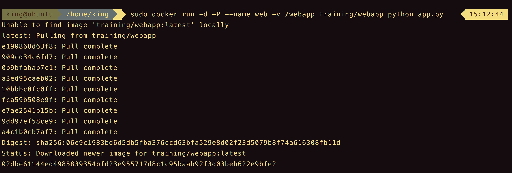
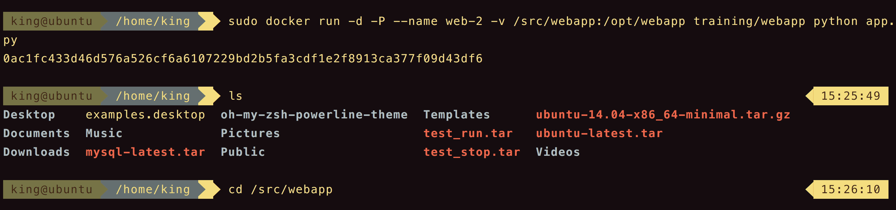
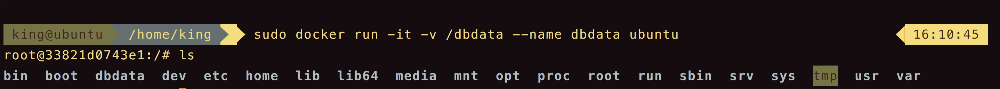
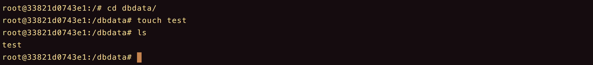
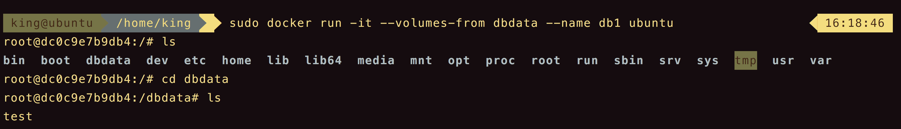
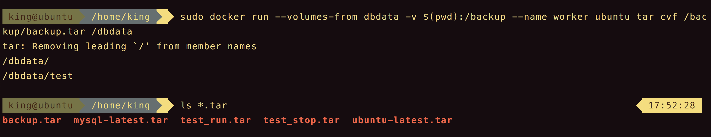

用户在使用docker过程中，往往需要查看容器内应用产生的数据，或者需要把容器内的数据进行备份，甚至多个容器之间进行数据的共享，这必然涉及到容器的数据管理操作。
目录
容器的数据管理主要有两种方式：
- 数据卷（Data Volumes）
- 数据卷容器（Data Volume Dontainers）
数据卷
数据卷是一个可供容器使用的特殊目录，它绕过文件系统，可以提供很多有用的特性。
- 数据卷可以在容器间共享使用。
- 对数据卷的修改会马上生效。
- 对数据卷的更新，不会影响镜像。
- 卷会一直存在，直到没有容器使用。
数据卷的使用，类似Linux下对目录或文件进行mount操作。
在容器内创建一个数据卷
在用docker run命令时，使用-v可以在容器内创建一个数据卷。
1 | sudo docker run -d -P --name web -v /webapp training/webapp python app.py |

挂载一个主机目录作为数据卷
使用-v也可以指定挂载一个本地的目录到容器中去作为数据卷。
1 | sudo docker run -d -P --name web-2 -v /src/webapp:/opt/webapp training/webapp python app.py |

docker挂载的数据卷默认权限是读写（rw），用户也可以通过，ro设定只读。
1 | sudo docker run -d -P --name web-3 -v /src/webapp:/opt/webapp:ro training/webapp python app.py |
挂载一个本地主机文件作为数据卷
-v也可以从主句挂载单个文件到容器中作为数据卷。
1 | sudo docker run --rm -it -v ~/.bash_history:/.bash_history ubuntu /bin/bash |
数据卷容器
如果用户需要在容器之间共享一些持续更新的数据，最简单的方式是使用数据卷容器。数据卷容器其实就是一个普通的容器，专门用它提供数据卷供其他容器挂载。
首先创建一个数据卷容器dbdata，并在其中创建一个数据卷挂在到/dbdata。
1 | sudo docker run -it -v /dbdata --name dbdata ubuntu |

然后，可以在其他容器中使用–volumes-from来挂载dbdata容器中的数据卷。创建db1和db2两个容器，并从dbdata容器挂载数据卷。
1 | sudo docker run -it --volumes-from dbdata --name db1 ubuntu |
现在，容器db1和db2都挂载同一个数据卷到相同的/dbdata目录。三个容器任何一方在该目录写入，其他容器都可以看到。
在dbdata容器中创建一个test文件。
1 | root@33821d0743e1:/# cd dbdata/ |

在db1容器内查看。

可以多次使用–volumes-from参数来从多个容器挂载多个数据卷。还可以从其他已经挂载了容器卷的容器来挂载数据卷。
1 | sudo docker run -d --volumes-from db1 --name db3 ubuntu |
利用数据卷容器迁移数据
可以利用数据卷容器对其中的数据卷进行备份、恢复，以实现数据的迁移。
备份
1 | sudo docker run --volumes-from dbdata -v $(pwd):/backup --name worker ubuntu tar cvf /backup/backup.tar /dbdata |

恢复
首先创建一个带有数据卷的容器dbdata2。
1 | sudo docker run -v /dbdata --name dbdata2 ubuntu /bin/bash |
然后创建另一个新的容器，挂载dbdata2的容器，并使用untar解压备份文件到所挂载的容器卷即可。
1 | sudo docker run --volumes-from dbdata2 -v $(pwd):/backup ubuntu tar xvf /backup/backup.tar |